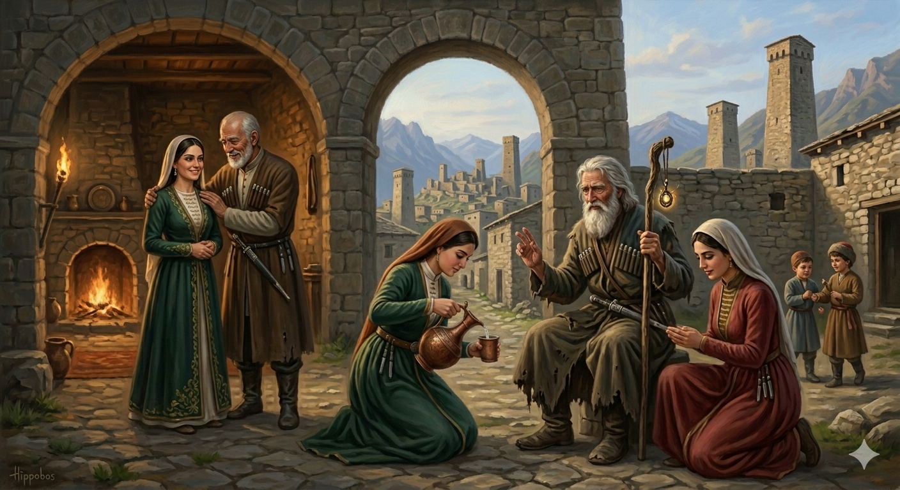

И.А. Дахкильгов. Хьехаме дувцарш - поучительные рассказы-притчи.
И.А. Дахкильгов. Хьехаме дувцарш - поучительные рассказы-притчи. Из ингушского фольклора.

Дика мар веха
Хи тӀа яха хиннай ши йиша. Наькъа водаш кӀаьдвенна вола цхьа воккха саг хьастага хьаэттав. Йижараша чӀоагӀа эздел лаьца хиннад цунца. МоллагӀа вола саг а воацаш, шайхал доаллаш хиннав из воккха саг. Йижарашка ше дӀа а вайзийта, аьннад цо: - Е шиъ, е кхоъ ма деха согара шоашта дикадар. ЦаӀ деха. Оаш дийха цхьа дика кхоачашде низ ба са. - ЦӀагӀарчарца дага ца доалаш хьогара хӀама деха магац тхона. Ӏа бокъо лой, цӀагӀа дага а даьнна, дукха ца говш тхо юха хьаоттаргдар, - дийхад йижараша. Мегад, бакълув шо, воккхача саго а аьнна, чубаха наьнаца дагабаьннаб йижарий. Нанас аьннад царга: - Е дошо-дото, е кхыйола цу тайпара еза хӀама ма еха. Дика моарош беха шоашта. Хьахьажал сога. Шуца со дӀай-хьай йодаш хилча, шун йиша я оал сох. Шун дас цкъа баге хьекха, цкъа хӀама теха, цхьаккха дега вас яьяц сона. Шун да дика хиларах доккха ираз долаш яхаш я со. Нанас хьийхар даьд йижараша. Дика моарой а нийсабенна, хьаьнала бахаш хиннаб уж.
РУССКИЙ
Просите хорошего мужа
Как-то две сестры пошли по воду. К роднику подошел некий старик, уставший от долгого пути. Сестры проявили к нему всяческое уважение и были предельно услужливы. Старик этот был не простым путником, а был волшебником. Об этом он поведал сестрам и добавил: - Не загадывайте мне ни два, ни три желания. Загадайте какое-нибудь одно и я его исполню. - Не посоветовавшись дома, мы не можем что-либо просить у тебя, - ответили сестры. - Позволь нам сбегать домой, мы не заставим тебя долго ждать. Старик согласился. Прибежали сестры домой и посоветовались с матерью. Она им сказала: - Не просите ни золота, ни серебра, никаких драгоценностей. Просите себе хороших мужей. Посмотрите на меня. Когда я иду с вами куда-либо по делу, не знающие нас принимают меня за вашу сестру. А все потому, что ваш отец ни разу не сказал мне грубого слова, никогда не огорчил меня. Настолько хорош со мною ваш отец и потому я счастливо живу. Сестры поступили по совету матери, удачно вышли замуж и жили, не зная горя.
ENGLISH
Ask for a good husband
One day, two sisters went to collect water. An old man, weary from his long journey, approached the spring. The sisters treated him with the utmost respect and helped him greatly. This old man was no ordinary traveller, but a wizard. He told the sisters this and added, "Do not ask me for two or three wishes. Ask for just one, and I shall grant it." "Without consulting our mother at home, we cannot ask you for anything," the sisters replied. "Let us run home; we won't keep you waiting long." The old man agreed. The sisters ran home and consulted their mother. She told them: "Don't ask for gold, silver or jewels. Ask for good husbands. Look at me. When I accompany you on business trips, strangers mistake me for your sister. This is all because your father has never once spoken a harsh word to me or caused me any grief. He is so kind to me, and that is why I am happy. The sisters followed their mother's advice, married well and lived without sorrow.
НОХЧИЙН
Дика майра веха
Хин тӀе йахан хилла ши йиша. Новкъа воьдуш кӀадвелла волу цхьа воккха стаг хьосте схьахӀоьттина. Йижарша чӀогӀа оьздангалла лаьцна хилла цуьнца. Муьлха а волу стаг а воцуш, шайхалла доллуш хилла и воккха стаг. Йижаршка ша дӀа а вовзийтина, аьлла цо: - Йа шиъ, йа кхоъ ма деха соьгара шаьшшина дика дерг. Цхьаъ деха. Аш дийхин цхьаъ дика кхочушдан ницкъ бу сан. - ЦӀерчаьрца дага ца довлуш хьоьгара хӀума деха магац тхуна. Ахь бакъо лахь, цӀахь дага а дойлла, дукха ца Ӏаш тхо йуха схьахӀуттур дар, - дехна йижарша. Мегар ду, бакълоь шушиъ, воккхачу стага а аьлла, чубахна ненаца дагабойлла йижарий. Нанас аьлла цаьрга: - Йа деши-дети, йа кхин йол цу тайпане йеза хӀума ма йеха. Дика марош беха шаьшшинна. Схьахьажал соьга. Шуьца со дӀай-схьай йодуш хилча, шун йиша йу олу сох. Шун дас цкъа а бага лейина, цкъа а хӀума тоьхна, цхьа а деган вас йина йац суна. Шун да дика хиларх доккха ирс долуш йехаш йу со. Нанас хьехнарг дина йижарша. Дика марош а нисбелла, хьанала бехаш хилла уьш.
ПОГОВОРКИ
Бахача безамо хозал лехац; йоагӀача набаро гӀовге лехац. - Влюбленный не разбирает красоты; одолевающий сон не разбирает подушек.Везачунца (езачунца) эрий ара а воахалу. - С любимым (любимой) и в дикой степи проживешь.Веший доттагӀа – йиший везарг. - Друг брата – жених (потенциальный) сестры.Дика а во а цӀагӀара доагӀа. - Все хорошее и плохое идет из дома.Дикача говро дика баьре лехав, хьаькъал долча йоӀо дика цӀенда лехав. - Добрый конь хорошего седока нашел; умная девушка пригожего жениха нашла.Лахка атта ба да воаца бож, кхестае атта я воша воаца йша. - Легко угнать бесхозный скот; легко вершить судьбу девушки, не имеющей брата.Фусам-нана хьурмат деш хуле, беркат хургда. - У бережливой хозяйки в доме достаток.Ший цӀагӀа воацар ара а вац. - Кто у себя в доме ничтожество, тот и вне дома никто.